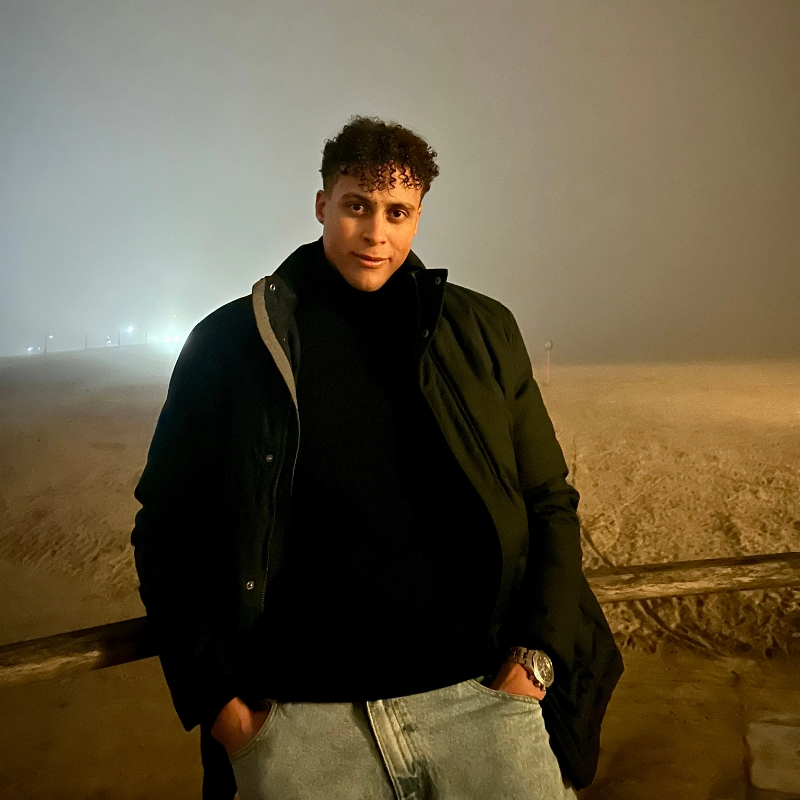

Al sinds ik kind was, ben ik altijd al gefascineerd geweest door technologie. Games, het bouwen van pc’s en uiteindelijk ook programmeren. Het uitwerken van concepten tot een volledig functionele applicatie is iets waar ik echt van geniet om deel van uit te maken. Vooral vind ik het interessant om te zien welke problemen een relatief simpel programma kan oplossen.
Learn more →